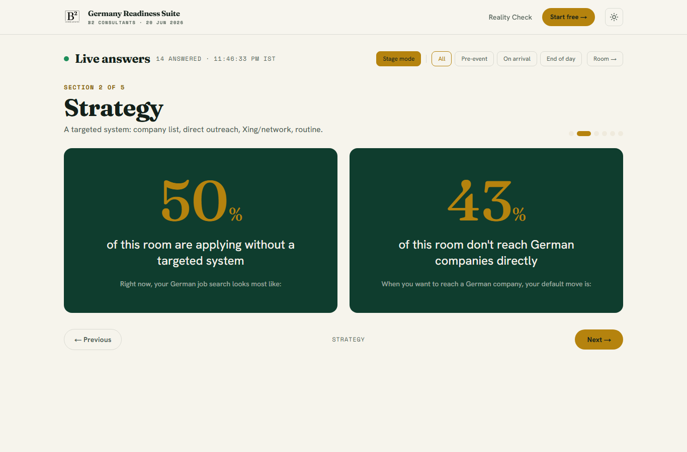
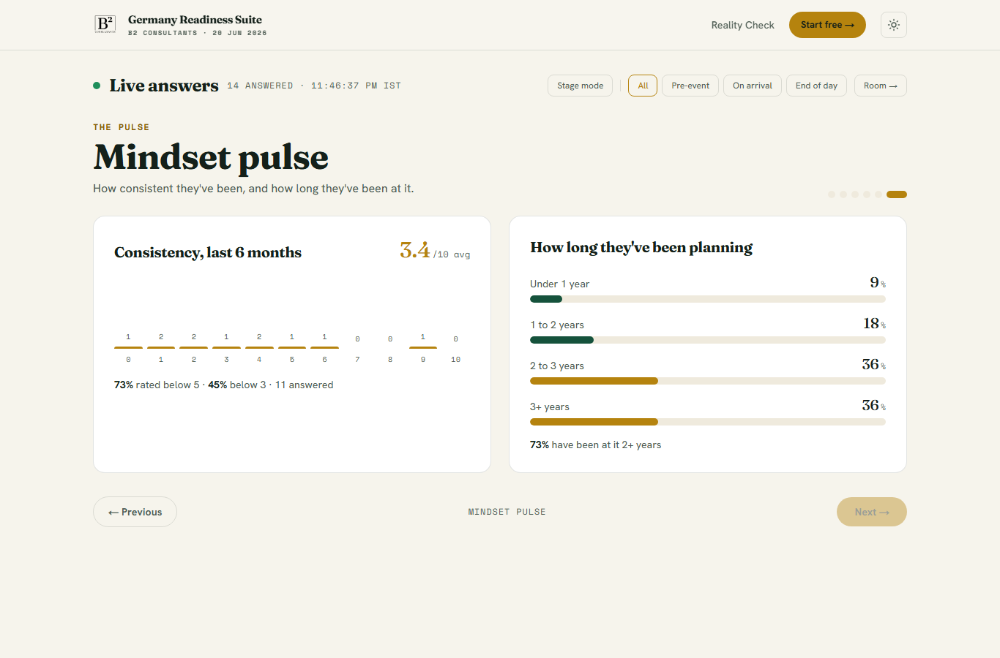
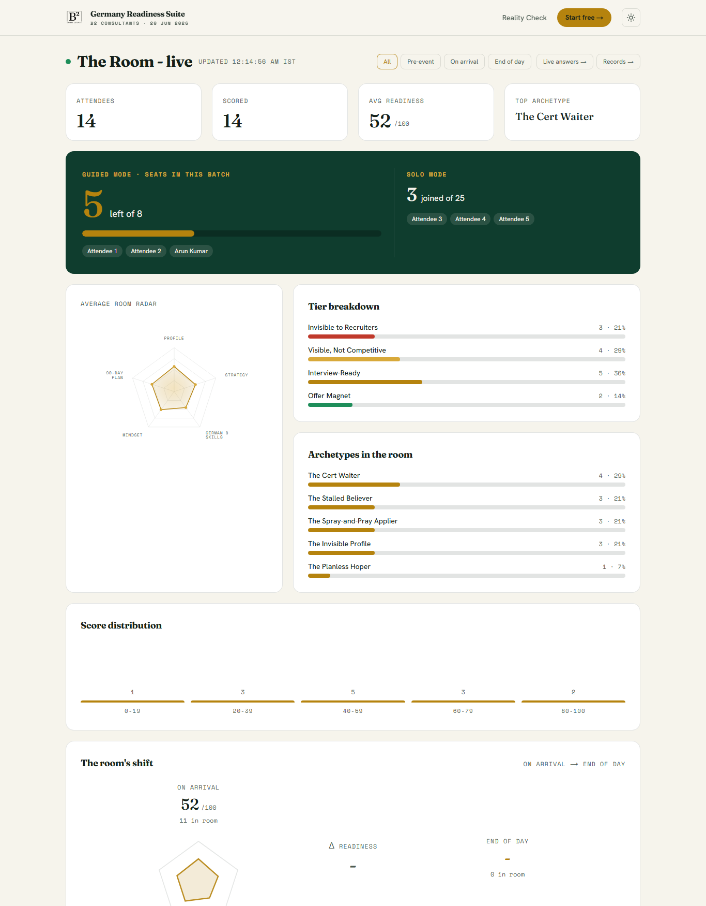
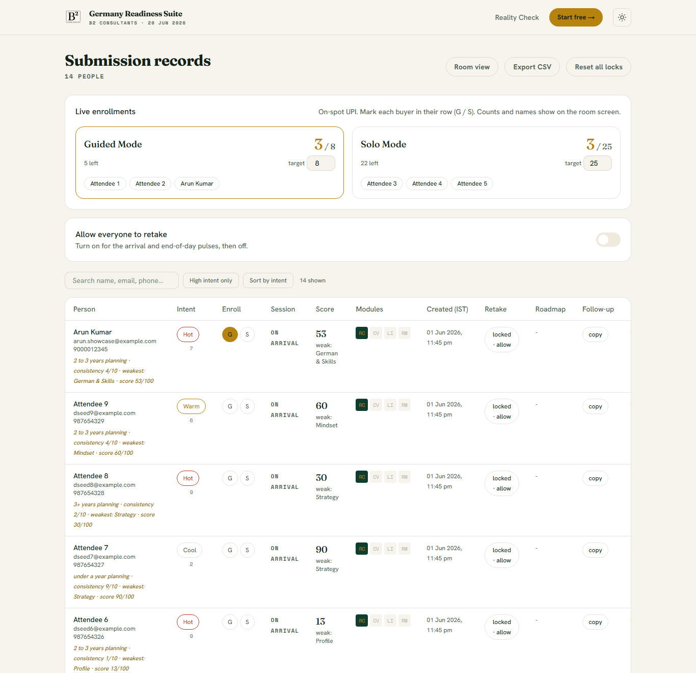

One job: turn the room's own answers into a number on the screen, then into enrollments. This is the operator guide — which screen, which moment, who.
| Screen | Address | For |
|---|---|---|
| Reality Check | /reality-check | Attendees take it on their phone. 10 questions + consistency and years. |
| The Room | /room | Big screen. Live averages, radar, the room's shift, and the seat counter. |
| Live answers | /room/live | The section-by-section reveal Ameen presents from. Has "Stage mode". |
| Records | /room/records | Admin. Intent list, enrollments, follow-up export, retake controls. |
The three /room screens open with the admin key. Bookmark them with ?key=YOURKEY so they open in one tap. Keep the key off the projector.
Hands first, screen second. Ameen still asks for hands in the debrief. Then the screen shows the exact number as the punch: "You saw the hands — here is the truth: 78% of this room can't state the problem they solve." The screen amplifies the moment; it never replaces the hands.
Stage mode shows one big stat per question (the share who chose a weaker answer) with that line ready to read. Toggle it with the Stage mode button or the S key; move sections with the arrow keys.
| Time | Agenda moment | App action | Who |
|---|---|---|---|
| 9:30 | Registration | Attendees scan the QR / open the link and take the Reality Check. | Reg team |
| 10:00 | Opening + stand-up | The Room on screen behind Ameen (or a holding slide). No reveal yet. | Tech |
| 10:30 | Section 1 debrief — Profile | Live answers → Section 1. Hands, then Stage mode for the big %. | Ameen / Tech |
| 11:05 | Section 2 — Strategy | Arrow to Section 2. Reveal the "50 applications, 0 replies" numbers. | Ameen / Tech |
| 11:35 | Section 3 — Skills & German | Arrow to Section 3. Reveal who is waiting on a certificate. | Ameen / Tech |
| 12:05 | Section 4 — Mindset (the peak) | Open the Mindset pulse: average consistency, % below 5, 2+ years. | Ameen / Tech |
| 12:30 | Lunch | Records → High intent only + Sort by intent to pick testimonial people. | Video team |
| 1:30 | Section 5 + testimonials | Live answers as needed; The Room shows the day's shift. | Ameen / Tech |
| 2:30 | The pitch | The Room on screen — the seat counter is visible as scarcity. | Tech |
| 2:50 | Buying window | Payment team marks each buyer in Records; names + count update on screen. | Payment |
| 4:00+ | After close | Records → Export CSV (high-intent + follow-up). Send that night. | Riyaz |


Records page → the Live enrollments card and the G / S buttons in each row. "Seats left" on the room screen is just target − enrolled. Tap on a tablet; Ameen stays on stage.

